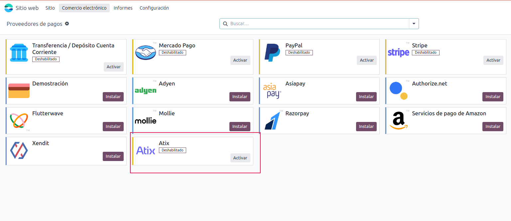
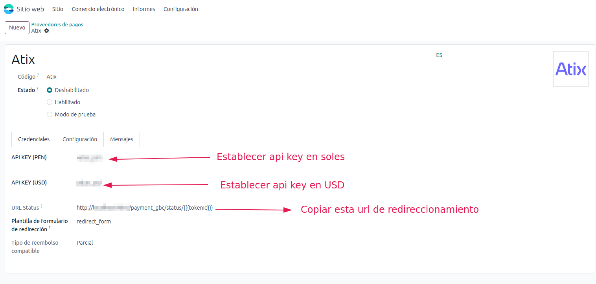
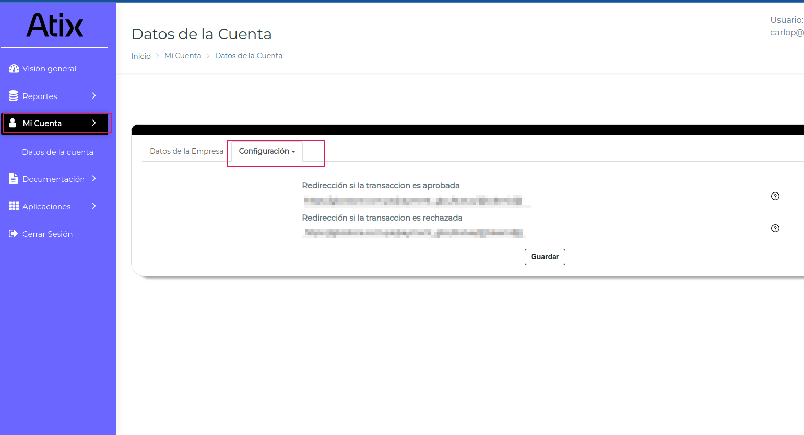
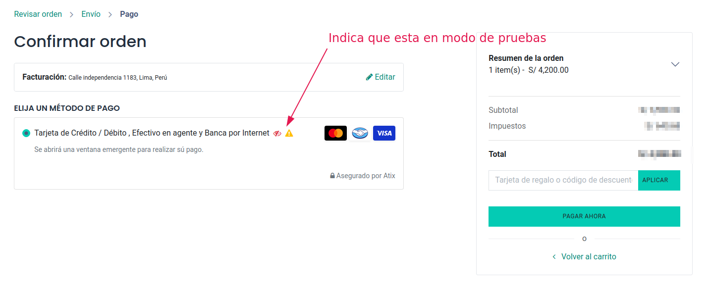
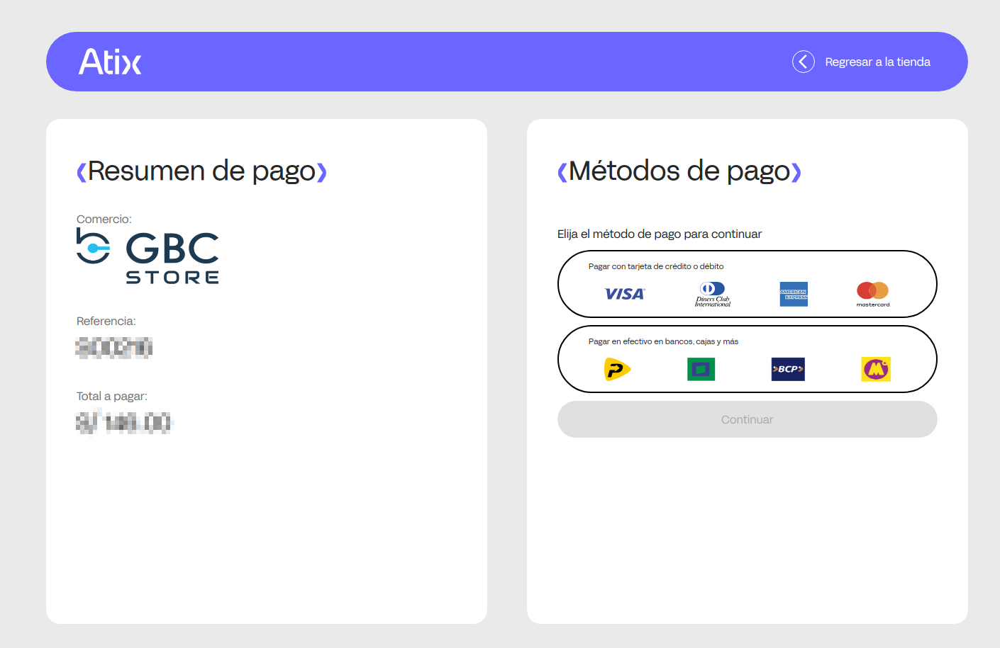

Para verificar que el módulo funciona correctamente, sigue estos pasos:

Completa la transacción y verifica que se procese correctamente.

Si la transacción es exitosa, deberías ver una confirmación en pantalla. En caso de errores, revisa los logs y verifica la configuración del módulo.